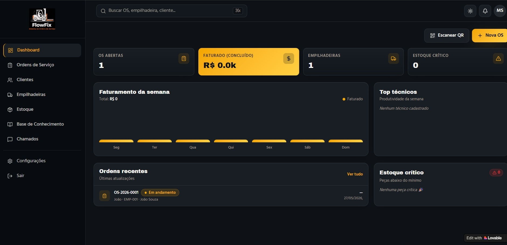
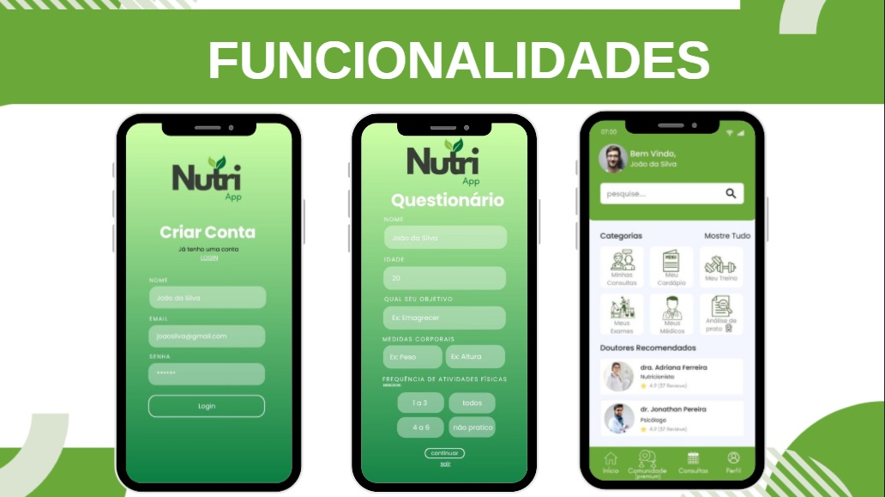

Sou estudante de Gestão da Tecnologia da Informação na FATEC Jahu e tenho grande interesse por desenvolvimento web, banco de dados, gestão de projetos e transformação digital.
Busco constantemente aprimorar meus conhecimentos por meio de projetos acadêmicos e pessoais, unindo tecnologia, criatividade e organização para desenvolver soluções digitais eficientes.
Atualmente também realizo serviços voltados à organização digital de pequenos negócios, auxiliando empresas na melhoria de processos e na presença digital.
Sou estudante de Gestão da Tecnologia da Informação na FATEC Jahu e tenho grande interesse por desenvolvimento web, banco de dados, gestão de projetos e transformação digital.
Busco constantemente aprimorar meus conhecimentos por meio de projetos acadêmicos e pessoais, unindo tecnologia, criatividade e organização para desenvolver soluções digitais eficientes.
Atualmente também realizo serviços voltados à organização digital de pequenos negócios, auxiliando empresas na melhoria de processos e na presença digital.
Cisco Networking Academy • Concluído em 2026 • Curso de programação em Python, lógica de programação e estruturas de dados.
Cisco Networking Academy • Concluído em 2026 • Fundamentos de segurança digital, ameaças cibernéticas e proteção de sistemas.
Cisco Networking Academy • Concluído em 2025 • Conceitos de hardware, componentes de computadores e infraestrutura de TI.
Fundação Bradesco • 2 horas • Desenvolvimento de páginas web utilizando HTML5, CSS3 e JavaScript.
INOVA CPS • 40 horas • Formação em inovação, empreendedorismo, ideação, prototipagem e validação de soluções.
INOVA CPS • 24 horas • Participação em desafio de inovação e resolução de problemas em equipe.
Fatec Jahu • 12 horas • Participação em palestras e atividades voltadas à tecnologia, inovação e transformação digital.

Sistema de gestão para manutenção de empilhadeiras desenvolvido para centralizar ordens de serviço, acompanhar processos operacionais e otimizar atendimentos técnicos.
Ver Projeto
Projeto de serviços digitais voltado para pequenos negócios, oferecendo organização de WhatsApp Business, criação de catálogos digitais e apoio à presença online.
Ver ProjetoDesenvolvimento de projetos acadêmicos utilizando SQL, modelagem de banco de dados e exercícios práticos com sistemas relacionais.
Ver GitHub